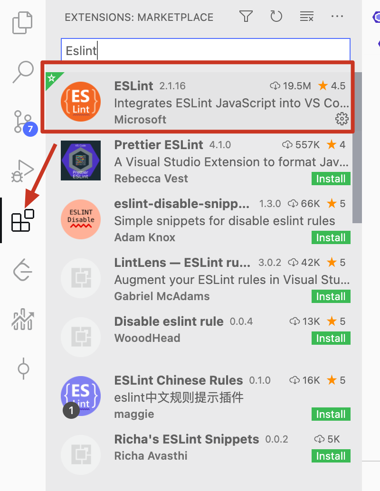
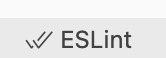
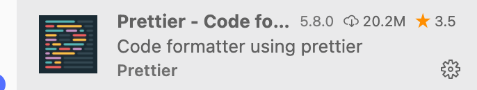
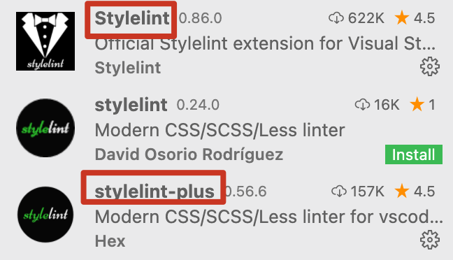

一、代码规范
工程没有具体统一的规范，包括有代码格式 , 命名规范 , 文档注释 。现在每个人都有自己的代码规范造成项目存在几种不同的规范，难以阅读。
统一代码规范不仅可以让程序员编写易于阅读、可维护性的代码，还有其他好处
- 规范的代码可以促进团队合作
- 规范的代码可以降低维护成本
- 规范的代码有助于 code review（代码审查）
- 养成代码规范的习惯，有助于程序员自身的成长
因此，我们就需要为我们的项目指定一套统一的代码规范。
二、如何制定代码规范
现在有很多优秀的开源代码规范，因此我们不需要从头开始制定一份代码规范，我们可以在优秀的代码规范上结合团队的需求作个性化修改。
下面列举一些比较出名的 JavaScript 代码规范：
- airbnb (101k star 英文版) (opens new window)，airbnb-中文版(opens new window)
- standard (24.5k star) 中文版(opens new window)
- 百度前端编码规范 3.9k star(opens new window)
CSS 代码规范也有不少，例如：
三、如何检查代码规范
- 使用工具校验代码格式。
- 利用code review审查变量命名、注释。
接来下我们来看一下如何使用工具校验代码格式
- 使用
Eslint负责找出代码中的错误 - 使用
Prettier负责代码格式化
3.1 Eslint配置
3.1.1 总览
基础
eslint: lint代码的主要工具
解析器
babel-eslint该依赖包允许你使用一些实验特性的时候，依然能够用上Eslint语法检查。反过来说，当你代码并没有用到Eslint不支持的实验特性的时候是不需要安装此依赖包的。@typescript-eslint/parserTypescript语法的解析器，类似于babel-eslint解析器一样。对应parserOptions的配置参考官方的README。
扩展的配置
eslint-config-airbnb该包提供了所有的Airbnb的ESLint配置，作为一种扩展的共享配置，你是可以修改覆盖掉某些不需要的配置的，该工具包包含了react的相关Eslint规则(eslint-plugin-react与eslint-plugin-jsx-a11y)，所以安装此依赖包的时候还需要安装刚才提及的两个插件eslint-config-airbnb-base与上一个包的区别是，此依赖包不包含react的规则，一般用于服务端检查。eslint-config-prettier将会禁用掉所有那些非必须或者和prettier冲突的规则。这让您可以使用您最喜欢的shareable配置，而不让它的风格选择在使用Prettier时碍事。请注意该配置只是将规则off掉,所以它只有在和别的配置一起使用的时候才有意义。
插件
eslint-plugin-babel和babel-eslint一起用的一款插件。babel-eslint在将eslint应用于Babel方面做得很好，但是它不能更改内置规则来支持实验性特性。eslint-plugin-babel重新实现了有问题的规则，因此就不会误报一些错误信息eslint-plugin-import该插件想要支持对ES2015+ (ES6+) import/export语法的校验, 并防止一些文件路径拼错或者是导入名称错误的情况eslint-plugin-jsx-a11y该依赖包专注于检查JSX元素的可访问性。eslint-import-resolve-webpack可以借助webpack的配置来辅助eslint解析，最有用的就是alias，从而避免unresolved的错误eslint-import-resolver-alias解决我们在webpack中配置别名，但是eslint无法鉴别出来的问题，可以利用该插件进行额外的处理。eslint-plugin-reactReact专用的校验规则插件.eslint-plugin-react-hooks利用该插件对hooks特性的代码作校验。eslint-plugin-prettier该插件辅助Eslint可以平滑地与Prettier一起协作，并将Prettier的解析作为Eslint的一部分，在最后的输出可以给出修改意见。这样当Prettier格式化代码的时候，依然能够遵循我们的Eslint规则。如果你禁用掉了所有和代码格式化相关的Eslint规则的话，该插件可以更好得工作。所以你可以使用eslint-config-prettier禁用掉所有的格式化相关的规则(如果其他有效的Eslint规则与prettier在代码如何格式化的问题上不一致的时候，报错是在所难免的了)
3.1.2 配置
3.1.2.1 各属性
env: 预定义那些环境需要用到的全局变量，可用的参数是：
es6、broswer、node等。es6会使能所有的ECMAScript6的特性除了模块(这个功能在设置ecmaVersion版本为6的时候会自动设置)browser会添加所有的浏览器变量比如Windowsnode会添加所有的全局变量比如global更多环境配置参考Specifying Environments
extends: 指定扩展的配置，配置支持递归扩展，支持规则的覆盖和聚合。
plugins: 配置那些我们想要Linting规则的插件。
parser: 默认ESlint使用Espree作为解析器，但是一旦我们使用babel的话，我们需要用babel-eslint。
parserOptions: 当我们将默认的解析器从Espree改为babel-eslint的时候，我们需要指定parseOptions，这个是必须的。
ecmaVersion: 默认值是5，可以设置为3、5、6、7、8、9、10，用来指定使用哪一个ECMAScript版本的语法。也可以设置基于年份的JS标准，比如2015(ECMA 6)
sourceType: 如果你的代码是ECMAScript 模块写的，该字段配置为
module，否则为script(默认值)ecmaFeatures：该对象指示你想使用的额外的语言特性
1
2
3
4
5globalReturn：允许全局范围内的`return`语句
impliedStrict：使能全局`strict`模式
jsx：使能JSXrules: 自定义规则，可以覆盖掉extends的配置。
settings：该字段定义的数据可以在所有的插件中共享。这样每条规则执行的时候都可以访问这里面定义的数据
更多配置选项参考官方文档Eslint
3.1.2.2 配置
- 在项目根目录新建.eslintrc.js文件
- 配置规则
1 | module.exports = { |
检测项目存在的问题
- 使用
npm eslint '指定文件'检测某一文件
- 使用
修正代码中的格式问题
- 使用
npx eslint xxx.js --fix来修正代码中的部分格式问题
- 使用
可以通过使用 VSCode插件来在代码中给出代码错误提示。
下载插件Eslint

在settings.json中进行配置
1
2
3
4
5
6
7
8
9
10
11
12
13"eslint.alwaysShowStatus": true,
"editor.codeActionsOnSave": {
"source.fixAll.eslint": true,
},
"eslint.options": {
"parser": "@babel/eslint-parser"
},
"eslint.validate": [
"javascript",
"javascriptreact",
"html",
"react"
],验证Eslint校验是否开启
可以通过vscode右下角的Eslint判断我们所配置的是否生效了。

3.2 Prettier配置
将Prettier集成在Eslint中，Eslint的配置可能会和Prettier的配置相冲突，因此我们可以通过eslint-config-prettier来关闭冲突规则。
3.2.1 总览
prettier原始实现版本，定义了prettier规则并实现这些规则。eslint-config-prettier关闭eslint中与prettier相互冲突的规则。eslint-plugin-prettier赋予eslint用prettier格式化代码的能力。
最基础的是prettier，然后你需要用eslint-config-prettier去禁用掉所有和prettier冲突的规则，这样才可以使用eslint-plugin-prettier去以符合eslint规则的方式格式化代码并提示对应的修改建议。
3.2.2 配置
- 修改
.eslintrc.js文件
1 | - extends: ['airbnb', 'airbnb/hooks'] |
规则plugin:prettier/recommended 做了什么？
1 | // node_modules/eslint-plugin-prettier/eslint-plugin-prettier.js |
- 在项目根目录新建
.prettierrc.js文件 - 配置规则
1 | module.exports = { |
格式化代码
格式化全部文档
1
2
3npx prettier --write .
//或
yarn prettier --write .格式化指定文档
1
2
3npx prettier --write src/components/Button.js
//或
yarn prettier --write src/components/Button.js
检查文档是否已格式化
1
2
3
4npx prettier --check .
//或
yarn prettier --check .
//检查指定文件同上同样的，我们安装vscode中的
Prettier，这样就可以运用编辑器快捷键进行格式化。
在
.setting.json文件中配置1
2
3"[javascript]": {
"editor.defaultFormatter": "esbenp.prettier-vscode"
},
3.3 检查CSS规范
3.3.1 总览
stylelint运行工具stylelint-config-standard是stylelint的推荐配置stylelint-order是用来在格式化css文件时对代码的属性进行排序。-
stylelint-config-css-modules是css-module的方案来处理样式文件
3.3.2 配置
- 在项目根目录新建
.stylelintrc.js文件 - 配置
1 | // .stylelintrc.js |
安装vscode-stylelint插件，实现保存时自动autoSave

Styleline和stylelint-plus的区别是，stylelint-plus支持了保存时autoSave配置vscode-setting.json文件
参考
1
2
3
4
5
6
7
8
9
10
11"stylelint.validate": [
"css",
"less",
"postcss",
"scss",
"vue",
"sass"
],
"editor.codeActionsOnSave": {
"source.fixAll.stylelint": true
},忽略lint文件
项目中有一些不需要格式化的代码，我们可以配置在运行lint时忽略这些文件
有三种方法可以起到忽略作用
- 我们可以在
.stylelintrc.js中配置ignoreFiles。 - 创建
.stylelintignore文件。 - 我们可以通过
/* stylelint-disable */的方法，来对代码块进行忽略lint检测。
这里我采用的是第二种方式
新建
.stylelintignore文件配置
1
2
3
4
5
6
7
8
9
10*.js
*.tsx
*.ts
*.json
*.png
*.eot
*.ttf
*.woff
*.css
src/styles/antd-overrides.less
- 我们可以在